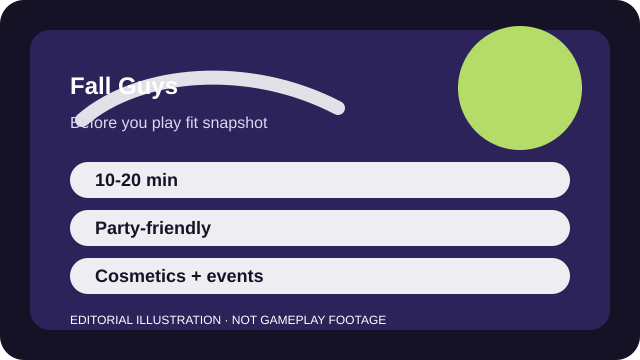

BEFORE YOU PLAY
What this page is and is not
This is a sourced editorial fit profile. It is designed to help with a yes-or-no play decision, and it does not claim a scored hands-on review.
It is one of the fastest fit checks on the site: if slapstick physics and elimination-show pacing sound fun, you will know quickly. If you need competitive precision every second, it may never fully click.
The first-session loop to judge is simple: Run short obstacle rounds, survive a few playful elimination games, and accept a little chaos as part of the joke.
Cosmetics and event rewards add direction, but most of the value comes from the social moment-to-moment loop.

FIT SNAPSHOT
Fall Guys at a glance
| Genre | Party platformer |
|---|---|
| Platforms | PC, PlayStation, Xbox, Switch |
| Business model | Free-to-play party game with cosmetic and event-driven monetization. |
| Typical session | 10-20 minute show runs that work well for mixed-skill groups. |
| Play style | light party competition |
| Learning barrier | Fall Guys is immediately understandable, and the main question is tolerance for slapstick unpredictability rather than complexity. |
| Social shape | It is great with friends, but still easy to parse solo because the rounds are short and the stakes stay light. |
WHO IT FITS
Best fit, likely friction, and the social reality
players who want low-pressure party sessions and easy laugh-at-the-chaos rounds
players who hate random collisions or want serious competitive control over every outcome
It is great with friends, but still easy to parse solo because the rounds are short and the stakes stay light.
Cosmetics and event rewards add direction, but most of the value comes from the social moment-to-moment loop.
FIRST SESSION PLAN
How to test the fit in one evening
- Link the platform accounts you need before a group night instead of during it.
- Play one solo show first so camera feel and jump timing are not new when friends arrive.
- Use early rounds to learn how dive and grab actually feel rather than only racing for qualification.
- Judge the game by the mood it creates, not by how many crowns you win right away.
Use the first session to answer these fit questions instead of judging rank, win rate, or store value immediately.
- Are you looking for a party game more than a ladder-focused competitive game?
- Will light randomness feel funny or frustrating after several rounds?
- Do you need something nonthreatening for mixed-skill friends or family?
TIME, COST, AND COMMITMENT
What you are really signing up for
| Session budget | 10-20 minute show runs that work well for mixed-skill groups. |
|---|---|
| Social demand | It is great with friends, but still easy to parse solo because the rounds are short and the stakes stay light. |
| Progression shape | Cosmetics and event rewards add direction, but most of the value comes from the social moment-to-moment loop. |
| Spending pressure | The game is free to enter. Spending is mostly cosmetic and event-driven. |
The game respects short sessions, and long-term stickiness depends more on your friend group than on deep progression.
The game is free to enter. Spending is mostly cosmetic and event-driven.
SOURCES AND LIMITS
What was checked, and what can change
- Limited-time events and playlists rotate regularly.
- Licensed cosmetics and crossover seasons can change the game's surrounding appeal.
- Platform or account-linking steps can change after backend updates.
This profile uses official game pages and defensible general product knowledge to frame the player fit. It does not claim live testing across every platform, accessibility need, or current event rotation.